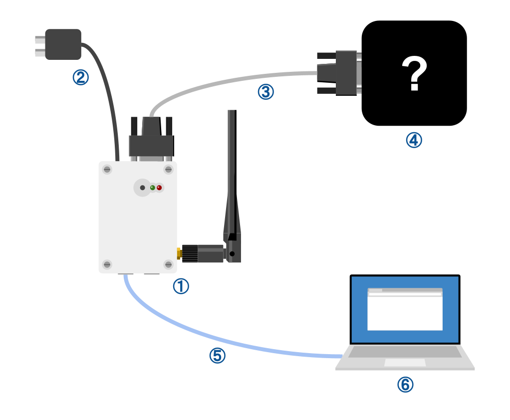
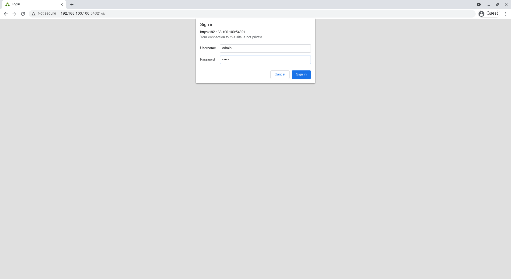
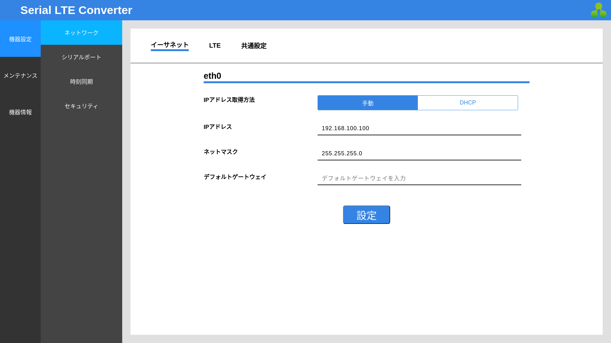

初期設定
接続
初期設定をするために、次の図のように機器を接続します。

- ① Serial LTE Converter
- ② ACアダプター
- ③ RS-232Cケーブル
- ④ RS-232C接続の対向機器
- ⑤ LANケーブル
- ⑥ PC
電源投入
ACアダプタを電源へ接続し、Serial LTE Converterの電源を入れます。
WebUIへのアクセス
PCのネットワークを適宜設定し、ウェブブラウザで192.168.100.100:54321にアクセスします。
正しくアクセスできると、ログインフォームが表示されます。

出荷状態では、デフォルトのユーザー名とパスワードは次のとおりです。
| ユーザー名 | パスワード |
|---|---|
| admin | admin |
入力すると、Serial LTE ConverterのWebUIにログインすることができます。
